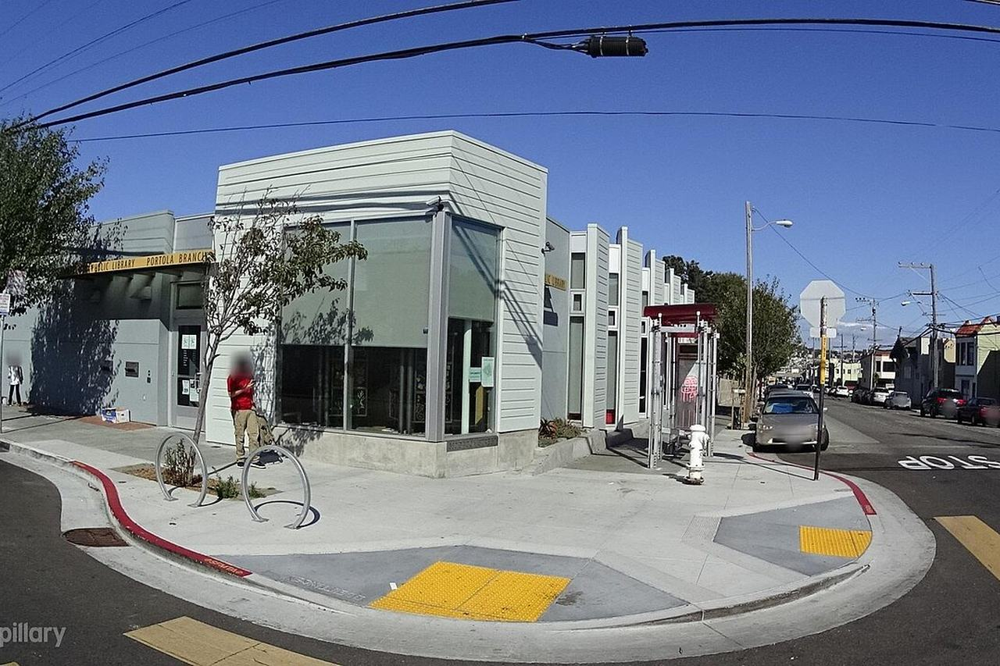

Portola
A hillside residential district in the city's south-east, between McLaren Park and Highway 101, laid out around the market gardens and greenhouses that gave it the nickname "the garden district."

Map
Named buildings and landmarks
-
1
-
2
Streets documented so far
- Bowdoin Street
1 building, built 1926. - Cambridge Street
1 building, built 1951. - Felton Street
1 building. - Gaven Street
1 building, built 1960. - Girard Street
1 building. - Hamilton Street
1 building, built 1915. - Holyoke Street
1 building, built 1908. - Silliman Street
1 building, built 1992. - Silver Avenue
1 building, built 1927. - University Street
1 building, built 1932. - Wayland Street
1 building, built 2004. - Woolsey Street
1 building, built 1961.
Parks and public spaces
- Louis Sutter Playground
Neighborhood park or playground, 14.3 acres. - Palega Playground
Neighborhood park or playground, 5.4 acres.
Adjacent neighborhoods
Bernal Heights is north-west across Highway 101 and Bayview Hunters Point east beyond Bayshore Boulevard. The Excelsior adjoins west over the ridge, and Visitacion Valley lies south past McLaren Park.